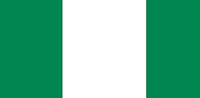

About Me
Hello, my name is Solomon John Ekaette and i am from Nigeria. I enjoy reading books and listening to music. Also i am a member of the Church of Jesus Christ of Latter-day saints and served a mission in the Cote D'Ivoire Abidjan East Mision (2021 - 2023). Currently, I am a BYU pathway student studying Software Development. Hoping to enjoy this awesome journey as i enjoy the ride.
My Country
Nigeria boasts of the largest economy in Africa. It is projected to rank among the world's top ten economies by 2050. Nigeria has an abundance of resources including oil and gas. The Country holds the largest natural gas reserves on the continent, and is Africa's largest oil and gas producer